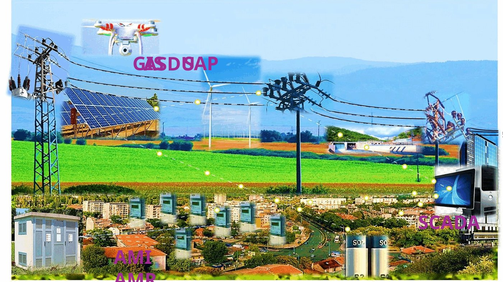

⚡
ЕЛЕКТРОЕНЕРГИЙНА СИСТЕМА · ДОПЪЛНИТЕЛЕН МОДУЛ
SCADA · AMI · AMR · GIS
Презентация за цифровизацията, наблюдението и управлението на електроразпределителната мрежа

За анимацията: оптимизираният файл PPSX съдържа анимирани GIF елементи и се стартира най-добре с Microsoft PowerPoint. PDF прегледът е удобен за телефон и браузър, но е статичен.